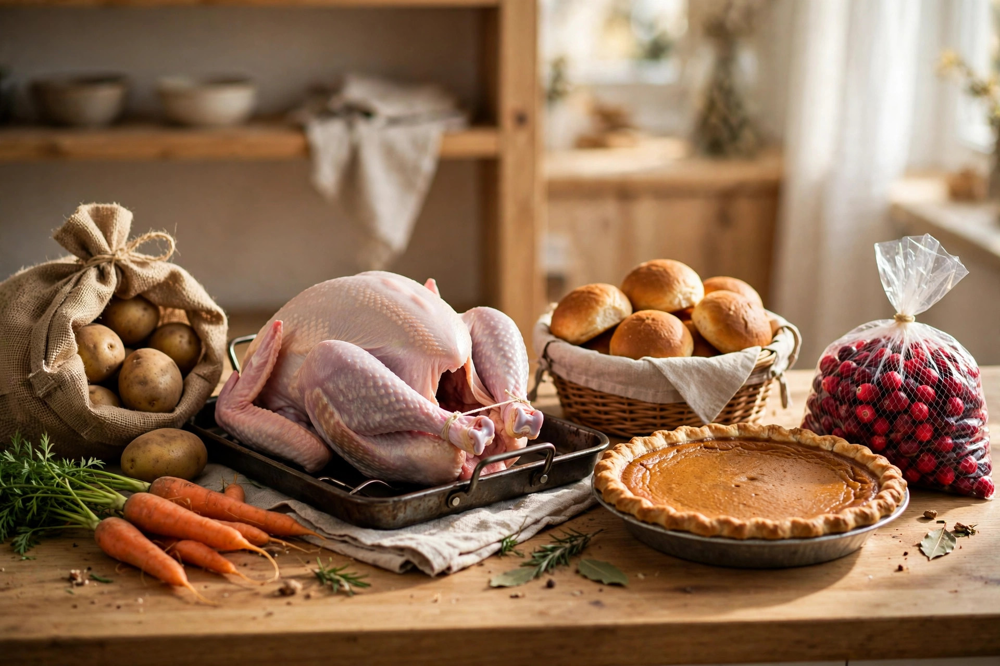

What Thanksgiving dinner actually costs in Canada in 2026

Every October the same headline number makes the rounds: this year's cost of a Thanksgiving dinner. For 2026 the number is $35.72 for four people, up 10 per cent from last year, according to the Dalhousie University Agri-Food Analytics Lab. But that figure answers a question nobody hosting actually asks. You're not feeding a statistical family of four — you're feeding eight, or twelve, and wondering whether to cook or order in. Here's that number translated into host math.
What the 2026 numbers actually say
The Dalhousie basket prices a traditional turkey dinner for two adults and two children at $35.72, up $3.24 from $32.48 in 2025 (and $32.30 in 2024). The turkey itself does most of the damage: 7 pounds of bird is estimated at $12.53, up from $10.43 last year. The rest of the basket — potatoes, carrots, dinner rolls, pumpkin pie, cranberries, stuffing, and gravy — makes up the remaining $23.19. Carrots had the oddest jump on paper, from $0.91 to $1.65 a pound, though the researchers note the 2025 figure was a promotional price, so it isn't pure inflation. A 10-pound bag of potatoes held steady at $6.99.
Two things worth knowing before you budget. First, the lab's Janet Music is explicit that the figures are based on advertised prices only — shoppers who go into stores often find unadvertised deals that bring the real bill below the estimate. Second, the numbers in circulation already conflict: at least one widely shared article reports $32.48 as the 2026 figure, which is actually the 2025 number. If a "2026 cost" article quotes $32.48, it's a year out of date.
And if you're considering skipping the turkey: ham lands at $36.37 for four — essentially the same as turkey — while lamb ($80.47) and lobster ($88.14) are in a different universe.
Per-guest math for real guest lists
The basket scales almost perfectly linearly, which makes the planning math easy. At $35.72 for four, dinner costs about $8.93 per head to cook at home. The turkey works out to roughly $1.79 a pound ($12.53 for 7 lb), and the sides run about $5.80 per person. Planning on about 1½ pounds of turkey per guest — dinner plus real leftovers — the estimates look like this:
| Guests | Turkey (~1½ lb each) | Sides (~$5.80 each) | Estimated total | Per head |
|---|---|---|---|---|
| 6 | 9 lb · ~$16 | ~$35 | ~$51 | ~$8.50 |
| 10 | 15 lb · ~$27 | ~$58 | ~$85 | ~$8.50 |
| 14 | 21 lb · ~$38 | ~$81 | ~$119 | ~$8.50 |
That's planning math, not a quote — your flyer prices and your menu will move it around. But the shape of it is reliable: cooking at home lands near $8–9 per person almost regardless of headcount, and the turkey is only about a third of the bill. The sides are the quiet majority of the cost.
Cook vs. takeout: the per-head comparison
This is the comparison nobody publishes. The same 2026 season's takeout and catering prices, converted to per-head cost:
| Option | Price | Serves | Per head |
|---|---|---|---|
| Cook at home (Dalhousie basket) | ~$35.72 | 4 | ~$8.93 |
| Lakeview Diner whole turkey takeout (Toronto) | $189 + tax | 6–8 | ~$24–32 |
| Farm Boy family dinner (Ontario) | $199.99 | 6–8 | ~$25–33 |
| 1 Elgin 12-lb turkey takeaway (Ottawa) | $335 | 8–10 | ~$34–42 |
| Eataly whole turkey meal (Toronto) | $299 | 6–8 | ~$37–50 |
| Sala San Marco take-home (Ottawa) | $400 + tax | 10 | ~$40 |
| Swiss Chalet individual feast | ~$18.79–29.79 | 1 | ~$19–30 |
The pattern: full takeout runs roughly 3–5× the cook-at-home cost per head. The hybrid middle exists, though — Eataly sells a fully cooked whole roasted turkey for 10–12 at $149.99 (about $12.50–15 per head for the bird), and you cook the far cheaper sides yourself. If the turkey is the part you dread, that's the deal to beat.
A note on method: this is a planning guide, not a procedure — there are no steps here because the job is arithmetic, not technique. Run your own guest count through the $8.50-per-head estimate, compare it against one takeout quote, and you'll have your answer in about two minutes.
Where the money actually goes (and what to trim)
Three levers matter. First, the bird: at $1.79 a pound in the Dalhousie math, each extra pound per guest is the single biggest swing — the 1-pound-per-guest rule versus 1½ pounds is the difference between dinner and a week of leftovers, so choose deliberately. Second, the sides: they're nearly two-thirds of the basket, which is why the make-ahead strategy doubles as a budget strategy — cooking from scratch beats pre-made sides on price every time. Third, the store: the Dalhousie figures are advertised prices, and as the lab itself notes, unadvertised in-store deals routinely beat them. The flyer the week before Thanksgiving is worth more than any budgeting spreadsheet.
FAQ
Is the $35.72 figure still accurate? It's the Dalhousie Agri-Food Analytics Lab's 2026 estimate, published October 2026 and based on advertised prices. Treat it as a planning baseline; your actual receipt will vary with local deals.
Why do some articles say $32.48? That's the 2025 figure. It's being recirculated as the 2026 cost by at least one outlet — check the year before you budget off it.
Is ham really cheaper than turkey? Not quite — the 2026 ham menu is estimated at $36.37 for four versus $35.72 for turkey. Ham is the closest budget alternative, not a cheaper one.
Keep readingNext: turkey basics — sizing, thawing, roasting without stress →